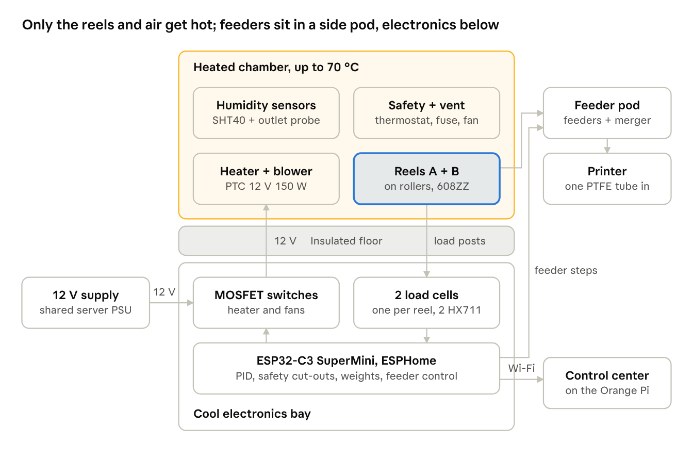
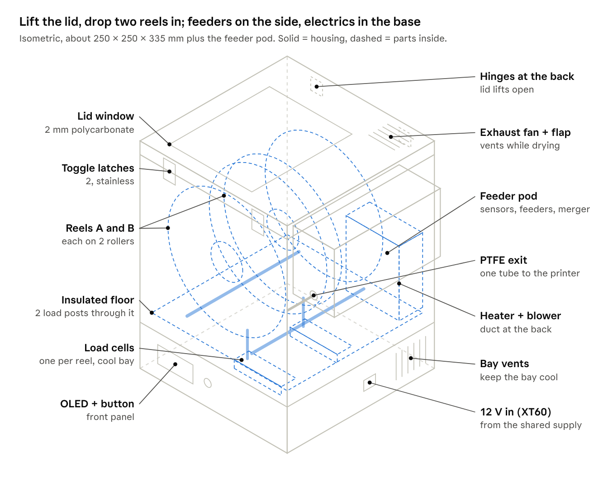
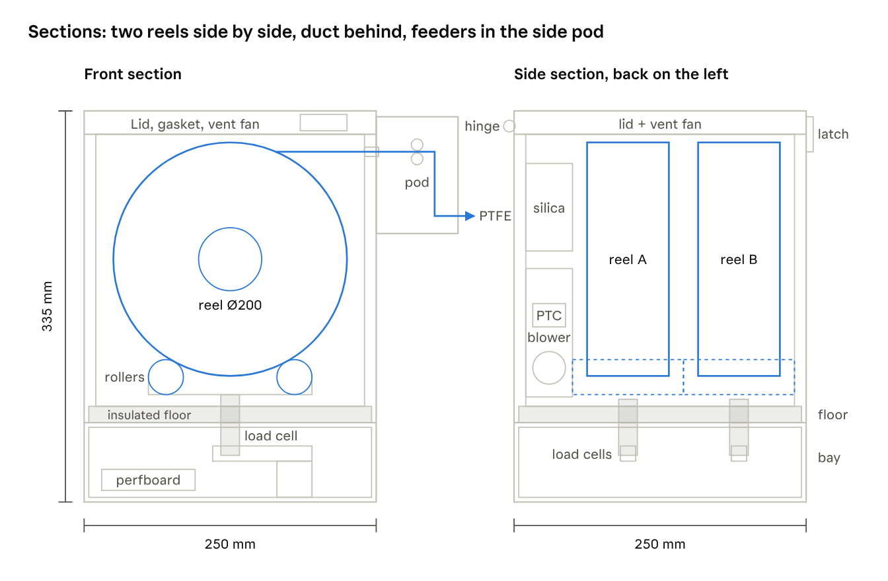
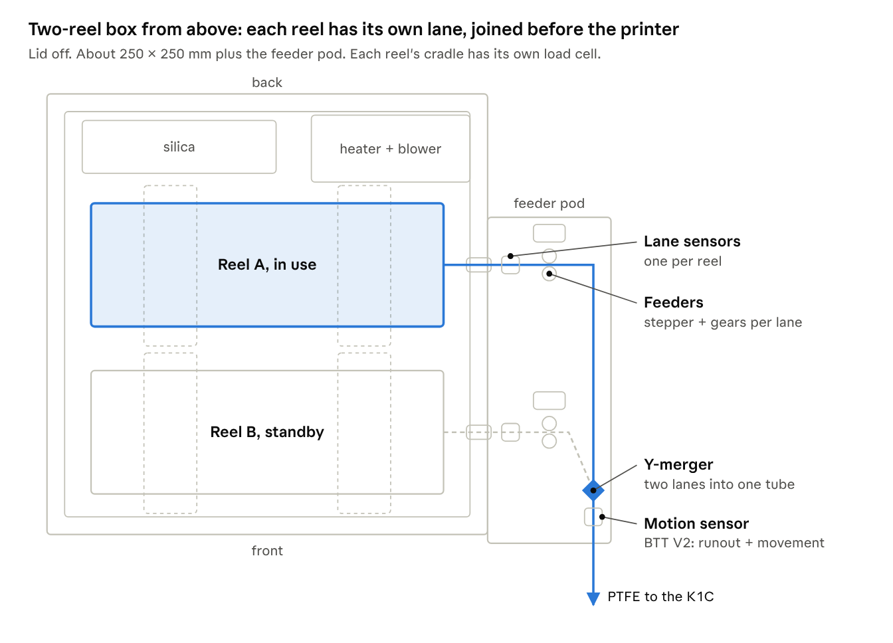
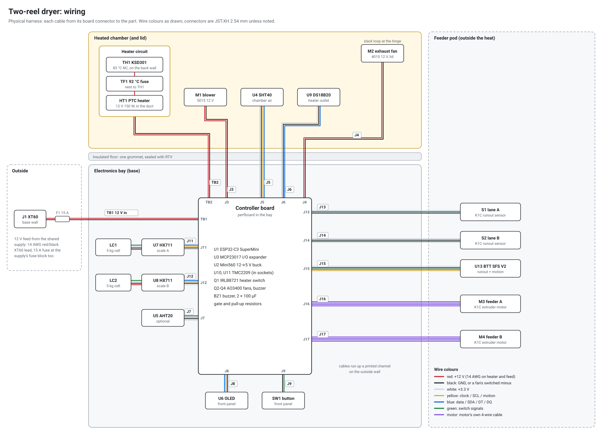

Two-Reel Filament Dryer
One top-loading, two-reel dryer box per printer, printed in ABS/ASA. Both reels drop onto bearing rollers and a 12 V 150 W PTC heater holds 40-70 °C. When the printer reports a filament runout, the box feeds the second reel in and the print resumes on its own. A JLCPCB-assembled controller board with an ESP32-C3 running ESPHome weighs both reels and reports to the Printer Control Center over Wi-Fi.
Summary
- One box per printer, two reels, automatic switch-over. Reel B takes over when the printer reports reel A has run out.
- 12 V feed, no mains in the box. A shared HP 1600 W server supply feeds every box over an XT60 lead; only that supply touches 240 V.
- Three zones plus a side pod: a heated chamber on top, an insulated floor, and a cool electronics bay underneath. The feeders sit in a pod on the side, outside the heat.
- Weigh each cradle, not the box. Each reel's roller cradle stands on its own post through the floor to its own load cell in the cool bay.
- Drop-in loading. Lift the lid, drop the reel on its rollers, push the filament end into its lane.
- K1C parts wherever they fit. The two feeders (K1C extrusion kit + extruder motor) and the two lane sensors (K1C runout sensor) are K1C spares, so the dryers and printers share one spares box. The fans are cheap 12 V dual-ball-bearing ones that run straight off the feed.
- Filament motion is measured. A BIGTREETECH Smart Filament Sensor V2 after the merger reports runout and counts filament movement (a pulse every 2.88 mm), so the control center knows the extruder is really pulling filament.
- Housing in ABS or ASA only. PLA softens near 60 °C and PETG near 80 °C; both creep at 65 °C over months.
| Requirement | How it's met |
|---|---|
| Easy loading/unloading | Hinged top lid with 2 toggle latches; reels rest on rollers, lift them out |
| eSUN 1 kg reels | Two lanes, each for Ø200 mm × up to 90 mm wide; full-width rollers fit any reel width |
| Bearings fine at 65 °C | 608ZZ steel-shielded bearings with standard lithium grease (rated about −20 to +120 °C) |
| Automatic temp/humidity | PID heater control, SHT40 humidity sensor, exhaust fan vent, Dry / Keep dry / Print modes |
| Long-lasting parts | K1C spare parts for the feeders and lane sensors; dual-ball-bearing fans, YZC load cells, a fully assembled controller board, silicone wire, stainless hardware, brass inserts |
| Weighs the reels, reports remaining | A load cell per reel; grams and metres per reel sent to the control center |
| Second reel loads itself | A feeder per reel and a Y-merger; the switch starts when the printer reports a runout |
| Power | 12 V feed from the shared server supply, XT60 on every box |
| 3D-printed housing | ABS/ASA parts; the chamber tub, lid and base print on a K2 Plus |
Architecture
The box is three stacked zones, a heated chamber, an insulated floor and a cool electronics bay, plus a feeder pod on its side.

Housing
The chamber holds two eSUN 1 kg reels side by side (each about Ø200 mm × 65-70 mm wide, hub hole about 52 mm; measure yours before finalising the CAD), and each lane takes wider cardboard reels up to 90 mm.
| Dimension | Value | Why |
|---|---|---|
| Chamber inside (L × W × H) | 230 × 230 × 235 mm | Ø200 reels + 15 mm clearance; two 95 mm lanes and a 40 mm heater duct at the back |
| Electronics bay inside height | 60 mm | Controller board, two load cells |
| Feeder pod, right side | about 85 × 185 × 120 mm | Lane sensors, feeders, Y-merger, motion sensor, outside the heat |
| Outside, without the pod | 250 × 250 × 335 mm | 4 mm walls + 6 mm insulation |
| Roller centres | 110 mm apart, 25 mm above the floor | Reel sits stable with about 35° contact angle each side |
| Roller length | 95 mm per lane | Any reel 50-90 mm wide |



Roller cradles. One cradle per reel, each with two rollers: a printed ABS sleeve (30 mm OD) with a 608ZZ bearing pressed into each end, turning on a fixed M8 stainless bolt. A printed front lip stops the reel walking off.
Weighing path and thermal break. Each cradle stands on its own Ø16 mm ABS post through a 24 mm hole in the insulated floor to the free end of that reel's 5 kg single-point load cell. A skirt on the cradle overlaps a raised collar round the hole without touching it, so little heat leaks down and nothing rubs. Printed hard stops 1 mm under each cradle protect the cells from a dropped reel.
Lid. Hinged at the back, closed with two stainless toggle latches, sealed with a silicone D-profile gasket. An optional 2 mm polycarbonate window works; acrylic warps at these temperatures.
Filament path. Each reel's filament leaves through its own PC4-M10 bulkhead high in the right wall into the feeder pod: lane sensor, then feeder. The lanes join at a Y-merger and pass a BTT Smart Filament Sensor V2 (runout switch plus a pulse every 2.88 mm of filament movement), then one 2 × 4 mm PTFE tube runs to the printer.
Insulation and desiccant. 6 mm self-adhesive, foil-faced NBR foam (rated to about 105 °C) lines the walls, lid and floor. A snap-in cassette on the back wall holds about 150 g of indicating silica gel; regenerate it in an oven at about 120 °C.
Printed parts
| Part | Qty | Approx. filament | Printer | Notes |
|---|---|---|---|---|
| Chamber tub | 1 | 520 g | K2 Plus | Gasket groove, heat-set insert bosses, two lane exits |
| Lid (+ window frame) | 1 | 190 g | K2 Plus | Hinge knuckles and latch mounts |
| Base / electronics bay | 1 | 270 g | K2 Plus | Vents, front panel cut-outs, XT60 cut-out |
| Insulated floor plate | 1 | 85 g | K1C | Two collars for the load posts |
| Roller cradles | 2 | 60 g each | K1C | Hold the M8 axles, front lip, post socket |
| Roller sleeves | 4 | 15 g each | K1C | 608ZZ pressed into both ends |
| Load posts + mount blocks | 2 sets | 25 g each | K1C | Print the posts solid |
| Heater duct + blower mount | 1 | 40 g | K1C | At least 15 mm between ABS and the PTC fins |
| Desiccant cassette | 1 | 30 g | K1C | Perforated face |
| Feeder pod + cover | 1 | 90 g | K1C | Both K1C extruders, two K1C runout sensors, the BTT motion sensor, the Y-merger |
| Electronics tray + front panel | 1 | 40 g | K1C | Controller board, OLED, button |
Print settings: ABS or ASA, 4 walls, 5 top and bottom layers, 30% gyroid, M3 brass heat-set inserts for every screw that gets undone.
Automatic reel switch-over
When the printer reports a filament runout, the box feeds reel B in and the print resumes on its own, so each reel is used to its very end. The control center runs the sequence over Moonraker; the box drives its two feeders.
- Runout. Reel A runs out, the printer's runout sensor trips and Klipper pauses the print itself. The last piece of filament A, from the sensor to the nozzle, is still in the tube and extruder.
- Start the switch. If reel B holds the same material and colour, the control center turns the printer's runout sensor off for the duration (
SET_FILAMENT_SENSOR SENSOR=filament_sensor ENABLE=0), so nothing can trigger a second pause. It never sends a pause of its own. The nozzle stays hot. - Feed B. Lane B's feeder pushes filament B through the Y-merger and up the PTFE tube until it butts against the end of A. B reaching the printer's sensor confirms it got there.
- Push-through purge. At the park position the extruder pushes out the leftover piece of A while lane B's feeder keeps pushing B behind it, so B follows A into the extruder gears; then about 30 mm more clears the joint.
- Resume. Runout sensor back on (it now sees B), resume, push "Switched to reel B, replace reel A".
- Check. The motion sensor must see filament moving within seconds of resuming, and reel B's weight must fall over the next minutes; if either fails, pause and alert.
If B doesn't reach the printer's sensor within the expected tube length, or the weight check fails, the print stays paused and the normal runout reminders fire. If the control center is down, nothing switches and the printer's own runout pause applies.
Reel end clipped to the hub. If the extruder can't pull the end free, no runout is reported and the printer prints in air. The motion sensor sees the filament stop within seconds, and reel A at its empty weight tells the control center why: pause and alert "end stuck at the hub". Free a reel's inner end when loading it, if the reel allows.
To test before relying on it
- The printer's sensor-to-nozzle length (the leftover piece that gets purged) and where its PAUSE macro parks, since the purge lands there.
- That B reliably follows A through the extruder gears end to end. Try it off-print first.
- Drag of the active lane's unpowered feeder gears; if too stiff, the feeder can assist in step with extrusion.
- Which sensor reports the runout on each printer (some have two).
Heating, humidity and safety
A PID loop on the ESP32 drives a 12 V 150 W PTC heater, a blower pushes chamber air through it, and an exhaust fan vents moist air while drying. Four independent layers stop it overheating.
Air loop. The 5015 12 V dual-ball-bearing blower sits at the inlet of the duct behind the reels, pulling chamber air (at most 70 °C) through the PTC fins and forward over both reels. The PTC sits in a short bent aluminium channel; the printed duct starts after it.
Venting. A 4010 12 V ball-bearing exhaust fan behind a gravity flap in the lid pulses while drying and the flap falls shut when it stops.
Sensors. An SHT40 for chamber temperature and humidity (rated to 125 °C) and a DS18B20 in the heater outlet, each on a small sensor board that breaks off the controller board, plus a second SHT40 on the controller board itself for the bay. All three are assembled by JLCPCB with the board.
| Mode | Heater | Vent fan | Ends when |
|---|---|---|---|
| Dry | Material preset | 10 s every minute for the first hour, then every 5 min | Preset time is up, or humidity below 15% for 30 min after the minimum time; then Keep dry |
| Keep dry | Off; desiccant does the work | Off, flap shut | Humidity above 25% for 15 min starts a short 45 °C dry |
| Feed temperature (PLA 40 °C, others 45-50 °C) | Off | The linked printer stops printing (+30 min) | |
| Off | Off | Off | Manual |
| Material | Dry temp | Time | Note |
|---|---|---|---|
| PLA / PLA+ | 50 °C | 5 h | eSUN PLA+ softens above about 55 °C |
| PETG | 65 °C | 6 h | |
| ABS / ASA | 70 °C | 4 h | Box maximum |
| TPU | 55 °C | 6 h | |
| Nylon / PC | 70 °C | 8-12 h | They want 80-90 °C; 70 °C works, just slower |
Safety chain
- Firmware: heater off if chamber > setpoint + 8 °C or > 75 °C, heater outlet > 100 °C (blower stalled), any sensor missing, no temperature rise after 10 min of full power, or a run longer than 24 h. Raises a critical alert.
- KSD301 85 °C, 16 A bimetal thermostat (normally closed, auto-reset) in the chamber air near the lid, in series with the heater.
- 92 °C, 15 A thermal fuse (one-shot) beside it, also in series.
- PTC heater limits its own power as it gets hot; the 12 V supply has its own overload cut-out.
The box's 12 V input has a 15 A blade fuse; the heater path is wired in 14 AWG. The blower runs on for 2 minutes after the heater turns off.
Weighing
Each reel's remaining filament is its cradle reading minus the empty reel; length follows from the material's density and the 1.75 mm diameter. A 5 kg cell with an HX711 reads to about 1-2 g once warmed up, about 0.5 m of filament.
grams_left = cradle_g − empty_reel_g
metres_left = grams_left / (density_g_per_cm3 × 2.405)
| Material | Density (g/cm³) | Grams per metre |
|---|---|---|
| PLA / PLA+ | 1.24 | 2.98 |
| PETG | 1.27 | 3.05 |
| ABS | 1.04 | 2.50 |
| ASA | 1.07 | 2.57 |
| TPU | 1.21 | 2.91 |
| Nylon (PA) | 1.14 | 2.74 |
Calibration (once per cradle)
- Tare: both cradles empty, lid closed, press Tare for each.
- Scale: put a known weight (the 500 g calibration weight) on a cradle and enter its grams.
- Empty reel: weigh an empty eSUN 1 kg reel and save it as the "eSUN 1 kg" reel profile.
The box reports a 10 s median, re-zeros a cradle that reads under 30 g for 30 s with the lid open, and reports the water a Dry cycle removes as the weight drop.
Power: 12 V feed
Every box runs from one shared HP 1600 W server supply over a 12 V feed; only that supply touches mains (240 V AC). There is no other power input on the box.
- Load per box: heater 12.5 A, fans about 0.4 A, feeders about 0.6 A while feeding, electronics about 0.15 A: about 13.5 A peak. Seven boxes are about 1.1 kW at worst, 70% of the supply's rating.
- Connector: XT60, not a barrel jack. Common 5.5 mm barrel jacks are rated 3-5 A. The XT60 is on the controller board itself (J1, through the base wall), next to its 15 A blade fuse (F1).
- Fuse every branch at the supply: a short 6 AWG cable to a blade fuse block, a 15 A fuse per box there and another inside each box. Fuse only the + wire.
- Wire gauge: 14 AWG for leads up to about 3 m, 12 AWG beyond that.
- The supply: needs its enable pins bridged or a breakout board; its fans are loud.
- Inside the box: the controller board takes the 12 V feed and makes its own 5 V (AP63205 buck) and 3.3 V (AMS1117).
- If the supply goes off, every box goes offline; the printer's own runout pause still works.
Electronics and pin map

The board carries an ESP32-C3-WROOM-02 module, the MCP23017, both HX711 load-cell amplifiers and both TMC2209 feeder drivers, so nothing plugs into it but the harness. A USB-C port (data only: plug in the 12 V feed while flashing) loads the first firmware; updates after that go over Wi-Fi. The load cells' own four leads crimp straight into J11 and J12.
| GPIO | Use | Notes |
|---|---|---|
| 0 | HX711 SCK (U7, U8) | One clock for both amplifiers |
| 1 | HX711 A DOUT | Reel A |
| 2 | DS18B20 1-wire | Strapping pin; the 4.7 kΩ pull-up keeps it high at boot |
| 3 | HX711 B DOUT | Reel B |
| 4 | Heater gate driver input (UCC27517) | 10 kΩ pull-down: heater off while booting |
| 5 | Blower MOSFET gate | 100 Ω series + 10 kΩ pull-down: off while booting |
| 6 | Exhaust fan MOSFET gate | Same as GPIO 5 |
| 7 | I2C SCL | Chamber SHT40 (sensor board SB1, 0x44), bay SHT40 (on the board, 0x45), OLED, MCP23017 |
| 8 | I2C SDA | Strapping pin; the I2C pull-up keeps it high |
| 9 | BOOT button | 10 kΩ pull-up; not used by the firmware |
| 10 | Feeder A STEP | |
| 20 | Feeder B STEP | UART RX only during boot |
| 21 | Filament motion (BTT SFS V2) | Through 1 kΩ, because the boot log comes out here; ESPHome counts the pulses |
| 18, 19 | USB D−, D+ | USB-C for flashing and logs (the C3's built-in USB serial) |
| MCP23017 | Use | Notes |
|---|---|---|
| GPA0 | Lane A filament sensor (K1C) | |
| GPA1 | Lane B filament sensor (K1C) | |
| GPA2 | Runout switch of the BTT SFS V2 | After the Y-merger |
| GPA3 | Push button | |
| GPA4 | Buzzer (through an AO3400) | |
| GPA5 | Feeder EN, both drivers (active low) | 10 kΩ pull-up keeps both drivers off at boot and while printing |
| GPA6 | Feeder DIR, both drivers | Only one feeder moves at a time |
Wiring
The physical harness: every cable from its connector on the controller board to the part, with wire colours and gauges. Use one colour per job throughout (the 6-colour 22 AWG silicone set covers it), so a cable can be traced at a glance. Crimp JST-XH 2.54 mm connectors on every cable that goes to a sensor, fan or motor, so parts can be swapped without soldering.

| Connector | Type, wire | Pins | Goes to | Where | Notes |
|---|---|---|---|---|---|
| J1 12 V in | XT60 (XT60PW-M on the board, XT60-F on the lead) 14 AWG | 1: +12V red 2: GND black | Shared supply's fuse block (15 A per box); F1 15 A on the board | through the base wall | J1 sits at the board edge and pokes through the base wall; nothing to wire inside the box |
| TB2 Heater | screw terminal, 2-way 14 AWG | 1: HEATER− (Q1 drain) black 2: +12V out → TH1 → TF1 → HT1 red | PTC heater HT1, with TH1 KSD301 and TF1 92 °C in series on the red wire | chamber | TH1 and TF1 sit high on the back wall in the chamber air |
| J3 Blower | JST-XH 2 22 AWG | 1: +12V red 2: FAN− (Q2 drain) black | 5015 blower M1 | chamber, heater duct | The fan's black lead goes to the MOSFET, not GND |
| J4 Exhaust fan | JST-XH 2 22 AWG | 1: +12V red 2: FAN− (Q3 drain) black | 4010 fan M2 in the lid | lid | Leave a slack loop at the hinge |
| J5 Chamber sensor | JST-XH 4 22 AWG | 1: +3V3 white 2: GND black 3: SCL yellow 4: SDA blue | Sensor board SB1 (SHT40), wires soldered to its pads | chamber | Silicone wire: the chamber reaches 70 °C |
| J6 Heater outlet sensor | JST-XH 3 22 AWG | 1: +3V3 white 2: GND black 3: DQ blue | Sensor board SB2 (DS18B20Z) in the heater outlet, wires soldered to its pads | chamber | Silicone wire; the board sits in the outlet air, not on the heater |
| J8 OLED | JST-XH 4 22 AWG | 1: +3V3 white 2: GND black 3: SCL yellow 4: SDA blue | SH1106 OLED U6 | front panel | |
| J9 Button | JST-XH 2 22 AWG | 1: BTN green 2: GND black | Push button SW1 | front panel | |
| J11 Load cell A | JST-XH 4 the cell's leads | 1: E+ red 2: E− black 3: A− white 4: A+ green | Load cell LC1 (its HX711, U7, is on the board) | bay | Crimp the cell's own four leads straight into the housing |
| J12 Load cell B | JST-XH 4 the cell's leads | 1: E+ red 2: E− black 3: A− white 4: A+ green | Load cell LC2 (its HX711, U8, is on the board) | bay | Same colours as scale A |
| J13 Lane A sensor | JST-XH 3 22 AWG | 1: +3V3 white 2: GND black 3: LANE_A green | K1C runout sensor S1 | feeder pod | Check the sensor's pin order with a multimeter first |
| J14 Lane B sensor | JST-XH 3 22 AWG | 1: +3V3 white 2: GND black 3: LANE_B green | K1C runout sensor S2 | feeder pod | |
| J15 Motion sensor | JST-XH 4 22 AWG | 1: +3V3 white 2: GND black 3: RUNOUT green 4: MOTION yellow | BTT Smart Filament Sensor V2 U13 | pod / exit | Confirm the BTT pin order with a multimeter while turning the wheel |
| J16 Feeder A motor | JST-XH 4 motor cable | 1: A1 motor 2: A2 motor 3: B1 motor 4: B2 motor | K1C extruder motor M3 (driver U10 on the board) | feeder pod | Swap one coil pair if the motor turns the wrong way |
| J17 Feeder B motor | JST-XH 4 motor cable | 1: A1 motor 2: A2 motor 3: B1 motor 4: B2 motor | K1C extruder motor M4 (driver U11 on the board) | feeder pod |
Parts catalog
About US$279 per box, plus about US$30 once for the shared supply's wiring. Prices are approximate, not checked against today's listings; search terms are what to type into AliExpress. Also available as bom.csv. Parts marked "K1C part" are Creality K1C spares: they cost about US$50 more per box than generic equivalents, but each can go straight into a printer. Check part numbers against a printer before ordering.
Control electronics (≈ US$40)
| Part | Qty | AliExpress search | ≈ US$ | Why this one |
|---|---|---|---|---|
| Controller board (JLCPCB, assembled) | 1 | (JLCPCB order: pcb/jlcpcb/bom-2-roll.csv) | 37 | ESP32-C3 module, MCP23017, both HX711s, both TMC2209 drivers, 5 V buck, heater and fan switches, buzzer, the bay SHT40, and two break-off sensor boards (chamber SHT40, heater-outlet DS18B20): all assembled |
| OLED display (optional) | 1 | 1.3 inch SH1106 OLED I2C | 3 | Local status |
| Push button | 1 | 12mm momentary panel push button | 0.5 | Short press cycles mode, long press tares |
Sensors (≈ US$44)
| Part | Qty | AliExpress search | ≈ US$ | Why this one |
|---|---|---|---|---|
| Load cells | 2 | YZC-131 5kg load cell | 10 | One per reel |
| Lane sensors (K1C part) | 2 | Creality K1C filament runout sensor | 16 | Lane A and lane B; same part as the printers' |
| Motion + runout sensor | 1 | BIGTREETECH Smart Filament Sensor V2 | 13 | After the merger: runout switch plus a pulse every 2.88 mm of filament movement; runs on 3.3 V |
| Calibration weight | 1 | calibration weight 500g | 5 | Accurate scale setup |
Heating and air (≈ US$28)
| Part | Qty | AliExpress search | ≈ US$ | Why this one |
|---|---|---|---|---|
| PTC air heater | 1 (buy 2) | PTC heater 12V 150W insulated aluminium | 10 | Self-limiting, insulated shell; 150 W for the two-reel chamber |
| Blower | 1 (buy 2) | 5015 blower 12V dual ball bearing | 7 | Cheap; ball bearings outlast sleeve bearings in heat. Gdstime and Winsinn are common, reliable makes |
| Exhaust fan | 1 (buy 2) | 4010 fan 12V dual ball bearing | 5 | Vents while drying |
| Bimetal thermostat | 2 | KSD301 85 normally closed 16A | 1.5 | Auto-reset hardware cut-out |
| Thermal fuse | 10-pack | thermal fuse 92C 15A | 1.5 | One-shot last-resort cut-out |
| Aluminium sheet | 1 | aluminium sheet 1mm 100x200 | 3 | Heater channel and heat shield |
Feeders (≈ US$65)
| Part | Qty | AliExpress search | ≈ US$ | Why this one |
|---|---|---|---|---|
| Feeder mechanism (K1C part) | 2 | Creality K1C extrusion kit 4001020076 (without motor) | 30 | The K1C's own dual-gear extruder; spares shared with the printers |
| Feeder motor (K1C part) | 2 | Creality K1C extruder motor 42-40 circular | 30 | The K1C's extruder stepper (1 A); fine on 12 V at feeding speeds |
| Y-merger | 1 | 2 in 1 PTFE filament hub PC4 | 3 | Two lanes into one tube |
| PTFE for inside the pod | 1 m | PTFE tube 2x4mm | 2 | The same tube the K1C uses |
Power (≈ US$36)
| Part | Qty | AliExpress search | ≈ US$ | Why this one |
|---|---|---|---|---|
| Shared: server supply breakout board | 1 | HP 1200W 1600W server power supply breakout board | 10 | Switches the supply on, screw terminals for 12 V |
| Shared: fuse block | 1 | 12 way blade fuse box with negative bus | 10 | One 15 A fuse per box, room for all seven |
| Shared: trunk cable | 1 m red + 1 m black | 6AWG silicone wire | 10 | Supply to fuse block, up to about 95 A |
| Per box: XT60-F plug for the supply lead | 1 (buy 2) | LCSC C98734 (Amass XT60-F) | 0.5 | Mates with J1, the XT60PW-M on the board |
| Per box: 15 A ATO blade fuse for F1 | 2 (one spare) | LCSC C142684 (Littelfuse 0287015.PXCN) | 0.3 | Goes in the fuse holder on the board |
| Per box: supply lead | up to 3 m red + black | 14AWG silicone wire | 5 | About 0.6 V drop at 13 A over 3 m |
Wiring and connectors (≈ US$26)
| Part | Qty | AliExpress search | ≈ US$ | Why this one |
|---|---|---|---|---|
| Heater-path wire | 2 m red + 2 m black | 14AWG silicone wire | 4 | Silicone insulation, rated to 200 C |
| Signal wire | set | 22AWG silicone wire 6 colours | 5 | Sensors, fans, steppers |
| Lever connectors | set | WAGO 221 | 4 | Get the genuine ones |
| Ferrules + crimper | kit | ferrule crimping tool kit | 5 | Reliable screw-terminal joints |
| JST-XH connectors | kit | JST XH 2.54 kit with crimper | 5 | Unpluggable sensors, fans and steppers |
| Heat-shrink | set | heat shrink tube kit | 3 |
Mechanical and consumables (≈ US$70)
| Part | Qty | AliExpress search | ≈ US$ | Why this one |
|---|---|---|---|---|
| Bearings | 8 (pack of 10) | 608ZZ bearing NSK or 608ZZ C&U | 6 | Steel shields, grease rated about -20 to +120 C |
| Roller axles | 4 + nuts | M8 x 120 stainless A2 hex bolt + nyloc | 6 | No rust in a humid box |
| Lid hinges | 2 | stainless steel hinge 40mm | 3 | |
| Lid latches | 2 | mini stainless toggle latch | 4 | Positive seal; magnets weaken when hot |
| Lid gasket | 3 m | silicone D seal strip self adhesive | 4 | Stays soft at 70 C |
| Filament fittings | 8 | PC4-M10 pneumatic coupler bulkhead | 5 | Lane exits, pod connections, printer end |
| PTFE tube | 2 m | PTFE tube 2x4mm | 4 | Box to printer |
| Insulation | 0.7 m2 | NBR rubber foam aluminium foil self adhesive 6mm | 11 | Rated to about 105 C |
| Heat-set inserts | 100 | M3 brass heat set insert | 4 | Screws that can be undone many times |
| Screws | kit | M3 stainless socket screw kit | 6 | |
| Load-cell screws | 8 | M4 / M5 stainless (match your cells' threads) | 3 | |
| Feet | 4 | rubber feet adhesive | 1 | |
| Desiccant | 500 g | orange indicating silica gel | 5 | Changes colour when spent |
| High-temp silicone | 1 tube | high temperature RTV silicone red | 4 | Seal cable holes through the floor |
| Window (optional) | 1 | polycarbonate sheet 2mm | 4 | Not acrylic |
Firmware and control center
The box runs ESPHome (firmware/dryer.yaml in this repo). The Printer Control Center keeps one live connection per dryer, links it to the printer it feeds and shows both reels on that printer's card. The safety rules run on the ESP32 itself, so the box stays safe if Wi-Fi or the Pi is down.
| Rule | When | Alert |
|---|---|---|
| Runout with a standby reel | The printer reports a runout and reel B matches reel A | Runs the switch-over; push when done |
| Filament not moving | Printing, and Klipper's filament_used rises 15 mm or more while the BTT sensor measures no movement | Pause + critical push (clog, jam, tangle or stuck reel end) |
| Not enough filament | The file needs more than the active reel plus a matching standby reel, + 5% | Warning push |
| Running out, no standby | Active reel under 30 g and no matching standby reel | Warning with the estimated time |
| Reel end stuck | Active reel at its empty weight, printing, weight not changing | Pause + critical push |
| Desiccant spent | Keep dry and humidity above 30% for 1 h | Warning |
| Dryer fault | Any firmware safety cut-out | Critical push |
| Dryer offline while printing | The 12 V supply or Wi-Fi drops during a linked print | Warning |
| Print mode | Linked printer starts printing | No push; Print mode until 30 min after the print |
Build plan
- Order parts (2-4 weeks shipping). Meanwhile measure a real eSUN reel and finish the CAD.
- Bench electronics: the assembled board with both load cells and the SHT40 on ESPHome. Calibrate both cradles; leave 1 kg on each overnight to measure drift.
- Heater test in the open: confirm the PID holds, the firmware cut-outs trip, and the KSD301 opens at about 85 °C.
- Feeder bench test: both feeders, the Y-merger and a tube into an idle printer's extruder; check B follows A end to end.
- Print and assemble the housing; fit insulation, gasket, feeder pod and wiring.
- Soak test: 12 h at 70 °C with two reels inside, logging chamber, outlet, bay and pod temperatures.
- Control center integration, then a first real switch-over on a watched test print.
Acceptance checks
- Reaches 65 °C from 25 °C in under 45 min, lid closed, two reels inside
- Holds setpoint within ±2 °C
- Unplugging the blower cuts the heater within 30 s
- Unplugging the SHT40 cuts the heater and raises a fault alert
- Bay and feeder pod stay under 45 °C during a 12 h run at 70 °C
- Each cradle reads within ±2 g of a kitchen scale; drift under 3 g over 12 h at 70 °C
- Five switch-overs in a row on a test print with no failed feed and no visible seam
- A reel with its end clipped to the hub raises "end stuck at the hub" and pauses
- Pinching the filament above the extruder raises "filament not moving" within 30 s
- Housing shows no warping after the 12 h soak